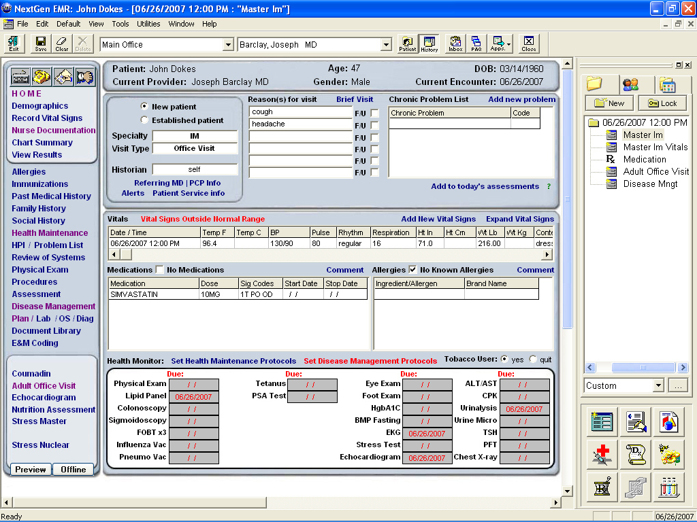

dude.
where's my tricorder?
Dec 2, 2016 • Laura Summers • @summerscope
Image attribution nepaltibet2005
the pace of change
In some sectors, blindingly fast
In others, not so much...
whose fault is this?
The fount of a million emo blogs...
NY Times
The Guardian
MIT Technology Review
Quora
etc...
actually not a git-blame thing
hard problems are hard
investors like contained scope
investors like business models which are well understood
want to tackle a hard problem...?
technology will probably be the smallest part
harder is fostering a culture of change
(it helps to understand what you're up against)
so here it is...
a whirlwind tour of obstacles, challenges, and cognitive biases you may encounter when attempting to disrupt
in the enterprise
the tender process
first date, or .... ?
Image attribution
anti-tender
impact investing is a growing segment
the sales cycle
Google research on hospital purchasing decisions
reimagine the sales cycle
your end users !== your clients
risk aversion theatre
call bulshit when you see it
status quo bias
rage against the status quo
UI complexity perceived as functionality & value
we tend to think that greater functionality means greater value
time for a UX smackdown
we can't afford...
Budgets ranging from USD $50 million - $1.2 billion
to purchase this:

^ retail enterprise ^